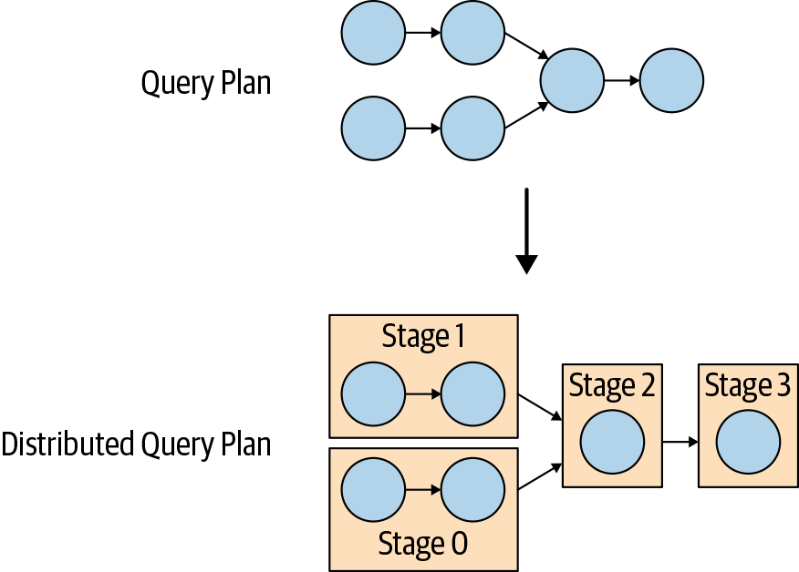

Presto Architecture
Coordinator and Workers in a Cluster
Presto是一个MPP（massively parallel processing）架构的查询引擎，可以水平扩展。Presot总体架构如下图所示，由1个协调节点和多个工作节点组成。客户端通过JDBC或CLI连接到协调节点。
协调节点负责接收用户请求和管理工作节点，协调节点上有个发现服务（discovery service），并允许工作节点注册并加入集群。客户端、协调节点、工作节点间的通信和数据传输都基于HTTP(S)。
下图显示了集群内工协调节点和工作节点之间的通信。协调节点与工作节点通信以分配任务、更新状态并获取顶层结果集以返回给用户。工作节点之间互相通信，从上游任务中获取数据。工作节点也负责从数据源获取数据。
Connector-Based Architecture
Presto中存储和计算分离的核心是基于连接器（connector）的体系结构。连接器为访问任意数据源提供了接口。每个连接器在底层数据源上提供了基于表的抽象。只要可以使用Presto中可用数据类型以表、列和行的形式表示数据，就可以创建连接器，Presto就可以使用这些数据进行查询处理。
Presto基于SPI（service provider interface）机制，规定了connector要实现的API接口，主要包括以下三部分：
- 获取 table/view/schema元数据的操作
- 产生数据分区的逻辑单元的操作，这样Presto可以并行读写
- 将源数据转换为查询引擎所需的内存格式的数据源（sources ）和汇（sink）
Query Execution Model
协调者在接收到提交的SQL后，会进行解析，生产执行计划。
在生成执行计划的过程中，会用到Metadata SPI和DataStatistics SPI。其中，前者用于校验查询在语义上是否有效，并对于语句中的表达式进行类型检查和安全性检查。后者用于获取记录行数和表的大小等以用于基于成本的查询优化（cost-based query optimizations）。
DataLocation SPI在创建分布式查询计划时会用到，其主要用于生成表内容的logical splits。split是最小的工作分配和并行单位。
分布式查询计划是简单查询计划的扩展，由一个或多个阶段（stage）组成的。简单的查询计划被切分成计划片段（plan fragment）。阶段是计划片段的运行时体现，它包含了计划片段所描述的所有任务。
协调节点将计划分解可以充分利用集群中的工作节点以并行方式进行处理。拥有多个阶段会生成一个阶段的依赖树。阶段的数量取决于查询的复杂度。下图大致说明了如何把逻辑查询计划转化为分布式查询计划。
分布式查询计划决定了在Presto集群上执行查询的阶段和方式。协调节点使用它来进一步计划和安排工作节点的任务。阶段由一个或多个任务（task）组成。通常，会涉及到许多任务，每个任务处理一段数据。
协调节点会将一个阶段中的任务分配给集群中的工作节点，如下图所示。
split是任务处理数据的单元。例如，Hive连接器以”文件路径+偏移量+长度”的形式描述split，表明了需要处理文件的部分。
源阶段（source stage）的任务以页（page）的形式生成数据，页是列格式的行集合。这些页流向其他的中间下游阶段。页由交换算子（exchange operator）在阶段之间传输，交换算子从上游阶段内的任务中读取数据。
因此，任务是分配给工作节点的计划片段的运行时体现。任务创建后，它为每个split实例化一个driver。每个driver都是算子管道的实例化，并处理split中的数据。根据配置和环境，一个任务内可以有多个drivers.
Query Planning
在构建查询计划之前，需要对SQL语句进行解析和分析。主要步骤包括：
- 识别查询语句中的表
- 识别查询语句中的列
- 识别对行值内字段的引用：比如从c.bonus可能是表c或别名为c的表的字段bonus，也可能是字段c中的属性bonus（具有命名属性的结构体）
|
对于以上sql会解析成如下计划
|
假如用N, O, C, R 分别表示nation, orders, customer, region表中的记录数，那么
- 三个表TableScan后的CrossJoin的复杂度是Ω(N × O × C)
- TableScan[region]的复杂度是 Ω(R)，由于存在LateralJoin，需要执行N次，因此总的计算成本是Ω(R × N)
- 排序操作的成本是 N × log(N)
因此总的成本至少为Ω[N + O + C + (N × O) + (N × O × C) + (R × N) + (N × log(N))]，可以简化为Ω[(N × O × C) + (R × N) + (N × log(N))]，现加上一个合理的假设即region表是最小的，nation表次之，那么再次简化为Ω(N × O × C)。
Optimization Rules
谓词下推（Predicate Pushdown）
谓词下推是最简单也是最重要的优化策略，它把过滤条件下推以尽可能靠近数据源。从而，在查询执行期间尽早进行数据缩减。
比如下面把CrossJoin和Filter转换为InnerJoin。用生成的记录行来表示计算复杂度的话，那么此次谓词下推可以把复杂度由 Ω(N × O × C)缩小为Θ(N × O)。但是nation和order的CrossJoin不能优化为InnerJoin，因为没有直接的条件（condition）来连接这两个表。
|
CrossJoin消除
CrossJoin消除会重排序表的连接顺序，以最小化CrossJoin的数量，理想情况下是将其减少到零。在前一节的基础上，修改join的顺序，可以把CrossJoin都转换为InnerJoin。此时join的成本就变成了Θ(C + O) = Θ(O). 由于其他部分未变，那么总的查询成本至少是Ω[O + (R × N) + (N × log(N))]。
|
TopN
对于OrderBy+Limit操作，如果采用先返回所有记录再排序的方式，那么计算成本为Θ(row_count × log(row_count))，内存占用为Θ(row_count)。如果在OrderBy+Limit之后加一个TopN节点，该节点中维护一个堆，在输入数据来会不断更新堆，那么计算成本可以优化为Θ(row_count × log(limit)) ，内存占用优化为Θ(limit)。此时上述查询例子的总成本优化为Ω[O + (R × N) + N]。
部分聚合（Partial Aggregations）
在上述的查询例子中，并不需要把orders表中的所有记录都传给join操作，因为我们并不对单个订单感兴趣。由于我们的查询是对属于每个国家的订单执行聚合操作，那么可以先执行如下的聚合操作以减少发送给下游操作的数据。该聚合操作的结果并不完整，因此称为预聚合（pre-aggregation）。
|
注：预聚合并不总是能带来提升，当预聚合不能减少数据量时反而会降低查询性能。因此该优化默认是关闭的，可以通过push_partial_aggregation_through_join参数来设置是否使用。默认情况下，Presto在join之后使用部分聚合，以减少Presto节点之间通过网络传输的数据量。
Implementation Rules
Lateral Join Decorrelation
Lateral Join可以实现为for-each循环，它遍历数据集中的所有行，并对每一行执行另一个查询。但是Presto中不是这样实现的，Presto会解除关联的子查询，把关联的查询条件上提，并组成一个left join。如果sql描述，那就是如下的转换
|
但事实上这两个sql语句并不等价。如果region表中有多条记录有相同regionkey，那么第一个语句会报错，但是第二个语句并不会，且会返回多条记录。因此，在转换为join之后，还要有两个附加操作，首先给源表中的所有行编号以便进行区分，其次检查是否有重复，如果有则报错。
|
Semi-Join (IN) Decorrelation
子查询还可以放在IN谓词中用于过滤记录行。IN谓词可以出现在过滤（WHERE子句）中或projection（SELECT子句）中。当在projection中使用IN谓词时，它不再是一个简单的布尔类型的操作符，其返回值为true, false 或null。
考虑一个查询如下，该查询旨在查找客户和项目供应商来自同一国家/地区的订单。
|
与lateral join类似，上面的查询也可以实现为循环外部查询的结果，并对结果中每条记录执行子查询。Presto没有采用这种方式，而是解除关联，首先去掉关联条件执行子查询，然后使用关联关系把子查询结果关联回外部查询。The tricky part is ensuring that the join does not multiply result rows (so a deduplicating aggregation is used) and that the transformation correctly retains the IN predicate’s three-valued logic.
在这种情况下，如果用于去重的聚合和join使用相同的分区方式，那么可以以流的方式处理，而不需要新加exchange节点，这样也可以减少内存占用。
Cost-Based Optimizer
在本节考虑以下查询语句
|
如果只根据前面介绍规则进行优化，则生成的计划如下。生成该计划仅依赖于SQL语句的词法结构，因此此类优化器也被称为句法优化器（syntactic optimizer）。
|
如果稍微修改SQL语句的WHERE子句如下
|
那么生成的计划也有响应的变化，即join的顺序修改了
|
可以看到简单的修改where条件的顺序就会影响查询计划，从而影响查询性能。显然不能要求用户根据内部的信息去创建一个最优的语句。而基于成本的优化器（cost-based optimizer）就能保证同一查询的不同SQL变体可以生成相同的优化查询计划。
除了时间复杂度之外，CPU时间、内存需求和网络带宽是影响查询执行时间的三个重要维度。
Cost of the Join
当使用相等条件连接两个表时，Presto采用hash join的实现方式。连接表中的某一个称为构建（build）端。此表用于构建以联接条件列为键的哈希表。另一个表称为探测（probe ）端。当哈希表构建完毕后，开始处理探测端的表记录。利用哈希表可以在常数时间内查找构建端匹配的记录。默认情况下，Presto使用三级哈希来尽可能地进行并行处理：
- 两个连接表的数据都基于联接条件列的哈希值分布到不同的worker节点中。这种节点级别的数据分配（node-level data assignment）是第一层哈希。
- 在节点级别，构建端的数据进一步使用哈希函数分散在构建端的工作线程中。构建哈希表是一个CPU密集型的过程，使用多个线程来完成这项工作可以大大提高吞吐量。
- Each worker thread ultimately produces one partition of the final lookup hash table. Each partition is a hash table itself. The partitions are combined into a two-level lookup hash table so that we avoid scattering the probe side across multiple threads as well. The probe side is still processed in multiple threads, but the threads get their work assigned in batches, which is faster than partitioning the data by using a hash function.
为了利用告诉的内存计算，构建端需要一直保存在内存中，所以节点的内存须要能容纳构建端的数据。优化器会选择哪个表应该是构建表，从而控制连接的内存开销。
Table Statistics
在前面提到每个表都由连接器提供。除了表的schema信息和对实际数据的访问之外，连接器还可以提供表和列统计信息：
- 表中的记录行数
- 列中不同值的数目
- 列中NULL值得比例
- 列得最大最小值
- 列得平均数据大小
有了这些统计信息，基于成本的优化器就能决定最优的连接顺序。对于前面的例子，会从最大的表（lineitem）开始，然后依次连接orders, customer和nation。
|
上述是最优的连接顺序，但并不一定是最优的查询计划。在Presto中设置以下属性
|
那么Presto可能会选择以下计划， 因为这样避免了通过网络发送三次最大的表（lineitem）。最终的计划取决于连接表的实际大小以及集群中的节点数量。
|
Filter Statistics
当增加过滤条件之后，也可能会改变join的顺序。在前面的查询例子中加上l.partkey = 638的过滤条件。在加此过滤条件之前lineitem是最大的表，而加了过滤条件之后，则变成了所有参与连接的关系中最小的了。
|
此时CBO生成的计划如下
|
CBO会根据统计信息来估计过滤的记录数，一个简单的估计方法如下：即先剔除该列为空的记录数，然后认为不为空时是均匀分布的。当然更合理的估算采用直方图（histogram）。
|
Table Statistics for Partitioned Tables
过滤表的一个特殊情况是分区表，比如Hive中的数据仓库。当过滤条件中包含分区键时，那么只需要读取匹配的分区即可，而且表的统计信息也是分区级别的。
Join Enumeration
到目前为止，我们提到的CBO基于统计信息选择了一个最佳的连接顺序，这会在很大程度上影响查询性能，主要有两个原因：
- Hash join 实现 ：hash join不是对称的，需要合理选择构建端和探测端
- 分布式join ：需要判断是将数据广播（broadcast）还是重新分发（redistribute）给连接输入
Broadcast Versus Distributed Joins
Broadcast join strategy
在broadcast join策略中，连接的构建端会广播给所有的工作节点。只有当分布在工作节点上的探测端没有重复数据时，语义上才是是正确的；否则，将生成重复的结果。
当构建端的表很小或探测端的表很大时，采用该策略是有益的。
Distributed join strategy
在distributed join策略下，探测端和构建段的数据都会在集群中重分布以并行地执行join操作。重分布需要借助分区算法以使得可能匹配的数据被发送到同一节点。
通过数据分区，可以应对连接的两个表都很大或内存不足的情况。缺点就是需要通过网络传输额外的数据。